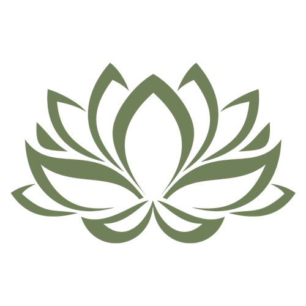

Regarde le printemps s’éveiller sur ta feuille !
Dans le cadre de mon projet, j’ai conçu une campagne de communication pour la réouverture des Jardins des Martels le 1er avril 2026, basée sur la technique de l’anthotype.
J’ai choisi de prolonger cette démarche en proposant aux visiteurs de créer leur propre image grâce à un kit d’anthotype que j’ai imaginé.
Cette page est accessible via un QR code présent dans ce kit et accompagne cette expérience.
Posez votre feuille imprégnée de curcuma sur une surface plane.
Exposez votre feuille au soleil pendant quelques heures.
Retirez les éléments et fixez avec un peu de bicarbonate.
Votre création devient un souvenir précieux du jardin.